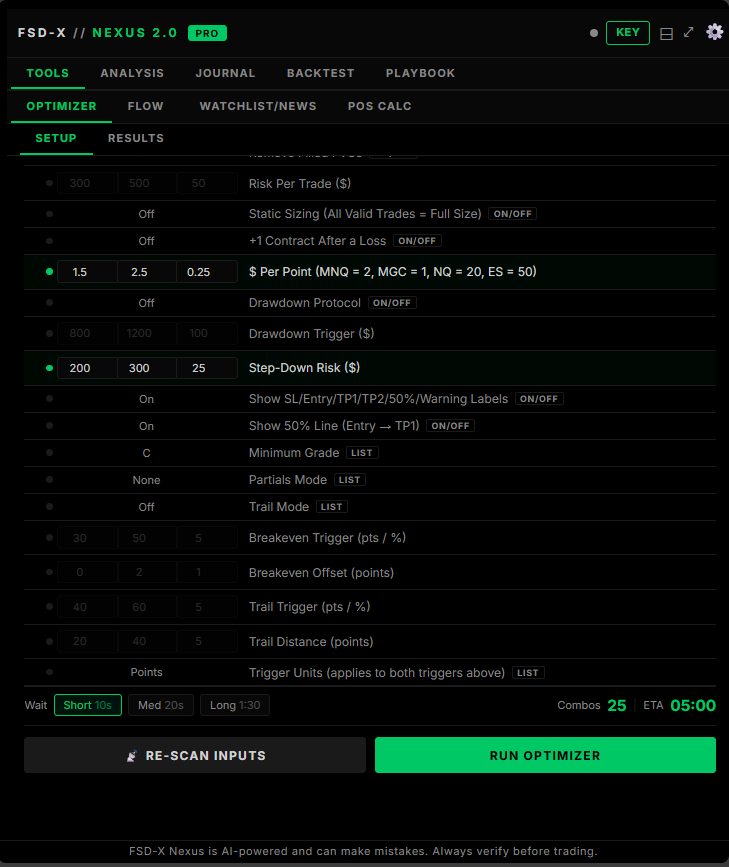
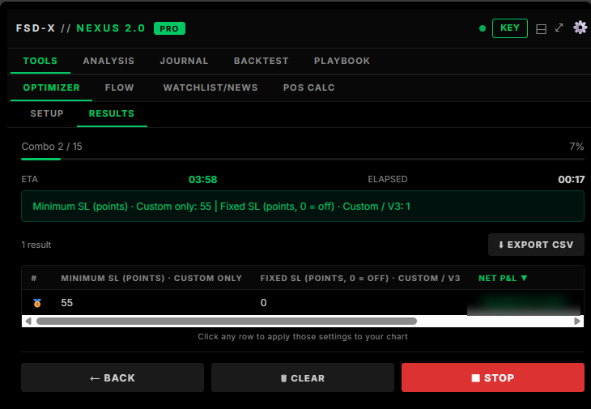
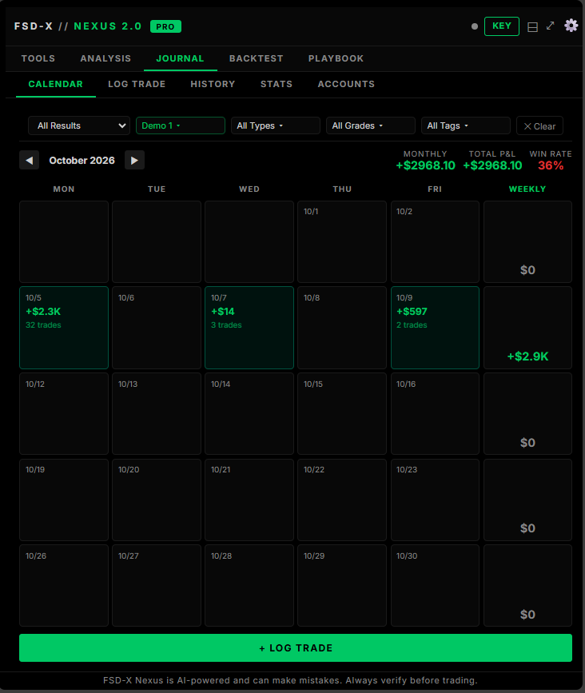
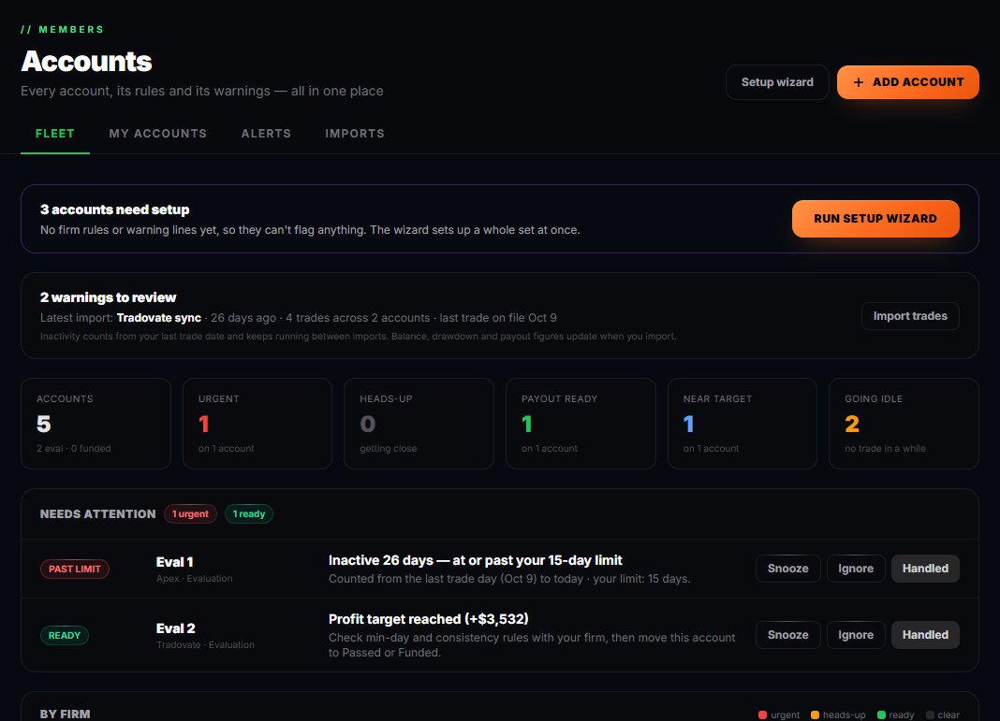
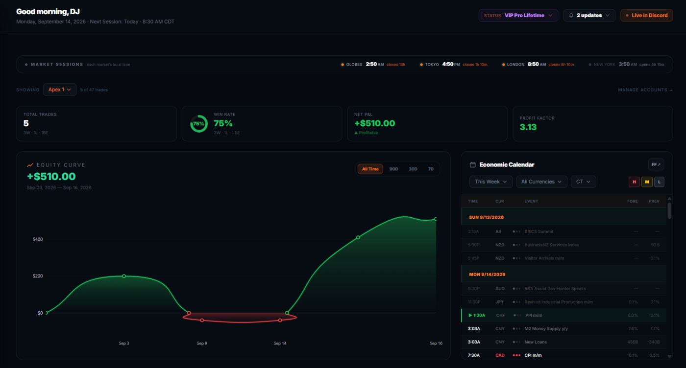
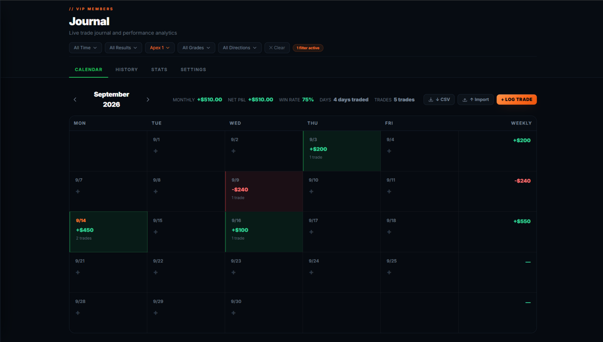
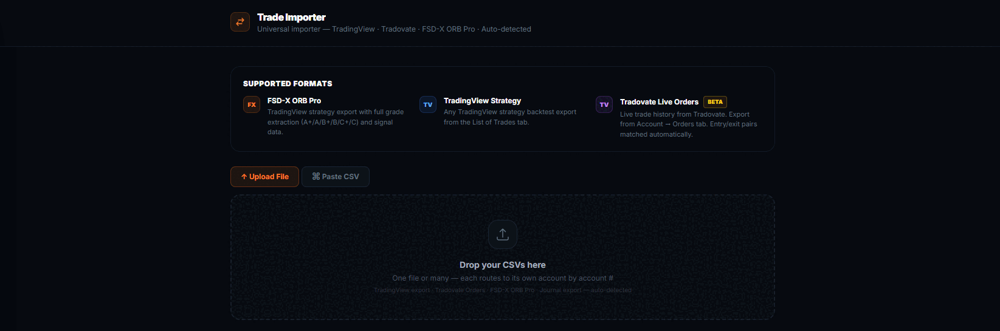
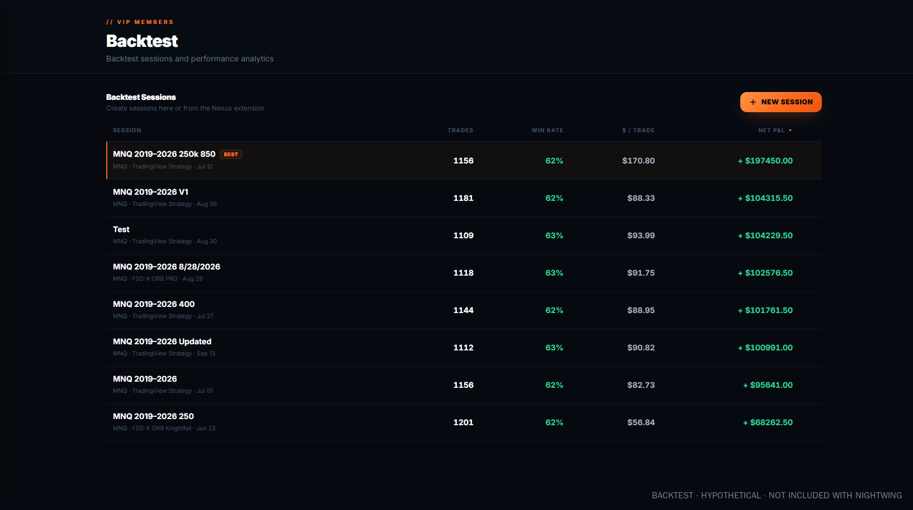
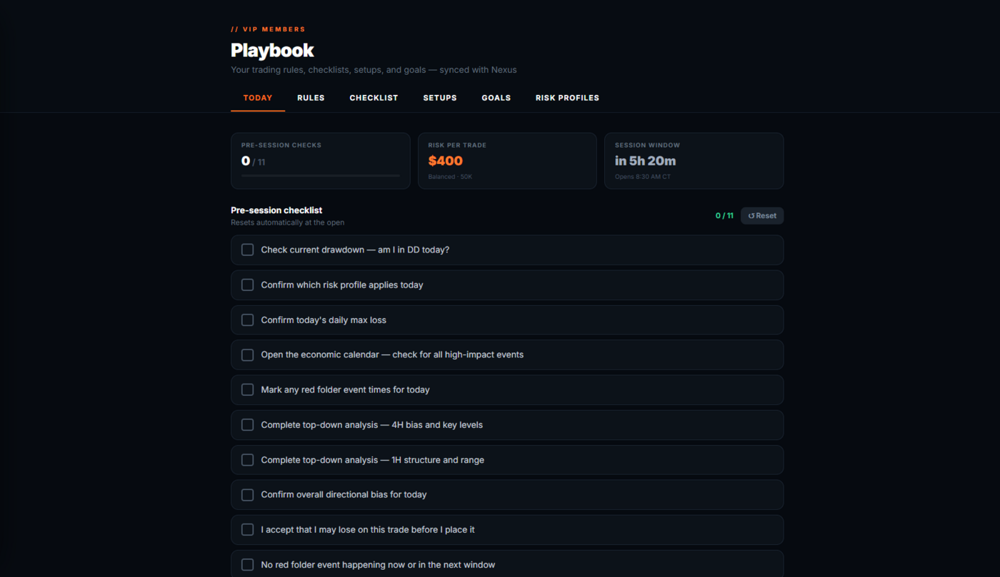

The tools, without the system.
Nexus docks beside your TradingView chart: a strategy optimizer that runs on any strategy, an eval simulator, position sizing and a journal. It’s connected to the member platform, so your journal and synced Tradovate accounts show up in both places. You bring the strategy.
Sweep any strategy’s settings instead of guessing them.
Open a TradingView strategy’s settings and Nexus reads its inputs off the screen. Give each one a minimum, maximum and step, and run it. Shown here on Knightfall, but it works on whatever strategy is on your chart.
- ✓Reads the inputs of any TradingView strategy
- ✓Min / max / step per setting, with a combo count and ETA
- ✓Short, medium or long wait per combo

Every combination tested, then ranked.
It works through each combination on your chart and ranks them. Click a row to apply those settings. Export the lot to CSV.
- ✓Live progress: combo count, ETA and elapsed time
- ✓Ranked results table
- ✓One click applies a row to your chart

Your trades on a calendar, from the panel.
Log a trade without leaving the chart. It lands in the site journal too. Filter by account, grade, result or tag.
- ✓Monthly calendar with weekly totals
- ✓Log trades from the panel
- ✓Synced with the journal on the site

Screenshots from a demo account. Optimizer results are hypothetical backtests of the strategy on your chart and are not a performance result; the net P&L column is blurred here on purpose.
Your strategy. Better tools around it.
$9.99/mo · 7-day free trial on monthly · longer terms work out to $8.33/mo · cancel anytime.
It is not a position size calculator with extras
Nexus is five tools in a side panel that sits against the TradingView chart. Most of it has nothing to do with our indicators — it works on whatever you happen to be trading.
Open any TradingView strategy's settings dialog and Nexus reads its inputs straight off the screen. Give each one a minimum, a maximum and a step, run the sweep, and read the combinations back ranked. It is not limited to our scripts — it optimises whatever strategy is on your chart.
Presets for Apex, TopStep, MFF and E8, or set your own account size, daily drawdown, trailing or end-of-day drawdown and profit target. Feed it your journal and it simulates the evaluation, including how the result changes with contract count.
Simulated outcomes from your own past trades. Hypothetical, and not a prediction that any evaluation will pass.
Drop in your entry, confirmation and trend charts and get them read as one picture, with your ticker, strategy and maximum risk as context. It is AI-assisted and it says so in the panel — a second opinion to argue with, not an instruction.
Position calculator for futures and forex, micro or standard, sized off your stop to a target R:R. Plus a watchlist scanner, news headlines, an economic calendar and an options flow reader.
Log a trade without leaving the chart — entry, exit, stop, both targets, tags, notes and a screenshot. Then history and stats: win rate, net P&L, long versus short, performance by day, drawdown from peak. Export to CSV or PDF.
Upload a CSV, keep each run as its own session, and read the results back the same way you read your live record. Sessions sync with the backtest workspace on this site.
Your rules, setups and goals, plus a pre-trade checklist you tick off before entering. Daily rules and drawdown-protection rules live here too, and all of it syncs with the playbook on this site.
The panel and the site are one account, not two
This is the difference between Nexus and every other browser extension you have tried. It is not a standalone tool that happens to share a login — it reads and writes the same data as the platform on this site, both directions, automatically.
Log a trade in the panel while the chart is still in front of you, and it is in your journal on this site before you have closed the tab.
Upload a backtest CSV on the site and the session is there in the panel's Backtest tab, ready to read against the chart.
Your playbook is one list. Rules, setups, goals and the pre-session checklist — tick something off in the panel and the site knows.
Accounts and defaults follow you. Tracked accounts, your usual ticker, timeframe and contract count are set once and apply in both places.
Connect Tradovate once. Link your Tradovate accounts on the site and they sync into your journal, dashboard and Fleet manager, and into Nexus automatically. No exports, nothing to set up twice.
Which is why buying one without the other would not make sense — and why they are never sold apart.
The record, after the close.
The same workspace every FSD-X plan gets, on fsdxtrading.com. Nothing to install. See every tool in detail →






Platform screenshots show demo accounts and an imported backtest CSV. Backtested results are hypothetical.
All of that is part of the FSD-X membership. Nightwing is a separate, cheaper product — not a cut-down membership.
Want something on the chart? Raven adds the ORB levels indicator, and the full membership adds the graded system. Nexus and the platform come with both. Compare them →
Then $9.99 per month. Cancel anytime before the trial ends and you're not charged.
Billed every 3 months. No free trial on this plan — billing starts immediately.
Billed every 6 months. No free trial on this plan — billing starts immediately.
Billed once a year. No free trial on this plan — billing starts immediately.
Just subscribed? Follow the Getting Started guide → to create your site account and activate Nexus.
Not ready to pay for anything yet? Arkham ORB is free on TradingView — same opening-range framework, no account needed.
No. Nightwing is the platform and Nexus only. ORB PRO (Knightfall MK2) and the rest of the indicator suite are part of the FSD-X membership.
Yes. The backtest workspace takes any backtest CSV you import — it is not tied to our scripts. Same for the journal and the trade importer, which read your broker's own exports.
Only the $9.99 monthly plan, which includes 7 days free. The 3-month, 6-month and annual plans bill immediately.
Yes, any time, through Whop. Your journal, accounts and backtest history stay with your site account.
No. Everything here is educational, rules-based software. It records and analyses your own trading — it does not tell you what to trade, and no outcome is guaranteed. See the Disclosures.
Have questions? Talk to the person who built it.
Not sure Nexus fits your strategy? Book a quick call, or look around the free Discord first.